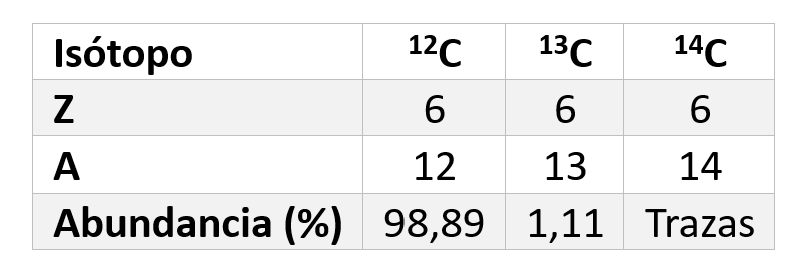
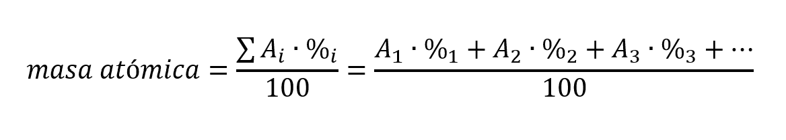
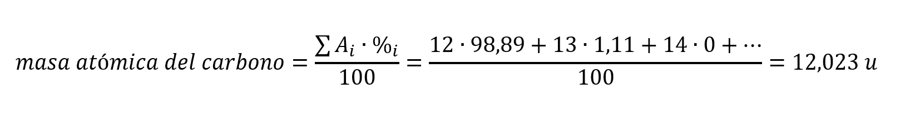

Isótopos
Los isótopos son átomos de un mismo elemento que tienen el mismo número atómico (Z), pero distinto número másico (A), es decir, tienen el mismo número de protones pero distinto número de neutrones, por lo que tienen una masa atómica diferente.
La masa atómica que aparece en la tabla periódica para un elemento químico es una media ponderada de las masas atómicas de sus distintos isótopos. Las abundancias relativas (proporción en la que se encuentran) de cada uno de los isótopos de un elemento químico suele ser diferente. Por ejemplo, los isótopos del átomo de carbono y sus abundancias relativas vienen recogidas en la siguiente tabla:

Para averiguar la masa atómica del elemento debemos aplicar la siguiente expresión:

Para el caso del átomo de carbono tendremos:

Recordamos que la unidad de masa atómica es la unidad de referencia para medir las masa de los átomos. Se define como la doceava parte de lo que pesa un átomo de 12C, que es la referencia que actualmente se utiliza. Una unidad de masa atómica (u) equivale a 1.660·10-27 kg.